Spatial Human Assessment
Spatial Age
Five reaction minigames for Apple Vision Pro. Life scale, fully immersive, scored on device into one functional age.
ScoreKit 0.2.0 · norms prior-0.2 · schema 0.2.0
Five reaction minigames for Apple Vision Pro. Life scale, fully immersive, scored on device into one functional age.
ScoreKit 0.2.0 · norms prior-0.2 · schema 0.2.0
Each game runs a short unscored practice round, then its scored trials. About six minutes end to end.
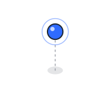
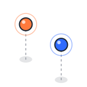
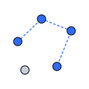
Every game is built from the same five motions. Feedback confirms contact. It never reveals timing or score.
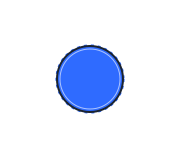
Live targets pulse 1.00 to 1.03 at 0.5 Hz.
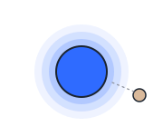
Emissive ramps as the fingertip closes from 30 cm.
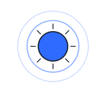
90 ms scale 1 → 1.25 → 0. Ring grows to 3× radius over 240 ms. Tick pitch follows speed.
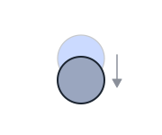
250 ms desaturate, drop 3 cm, fade.
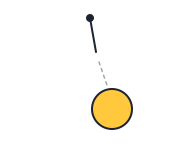
Cord flicks and fades in 120 ms with a low tock.
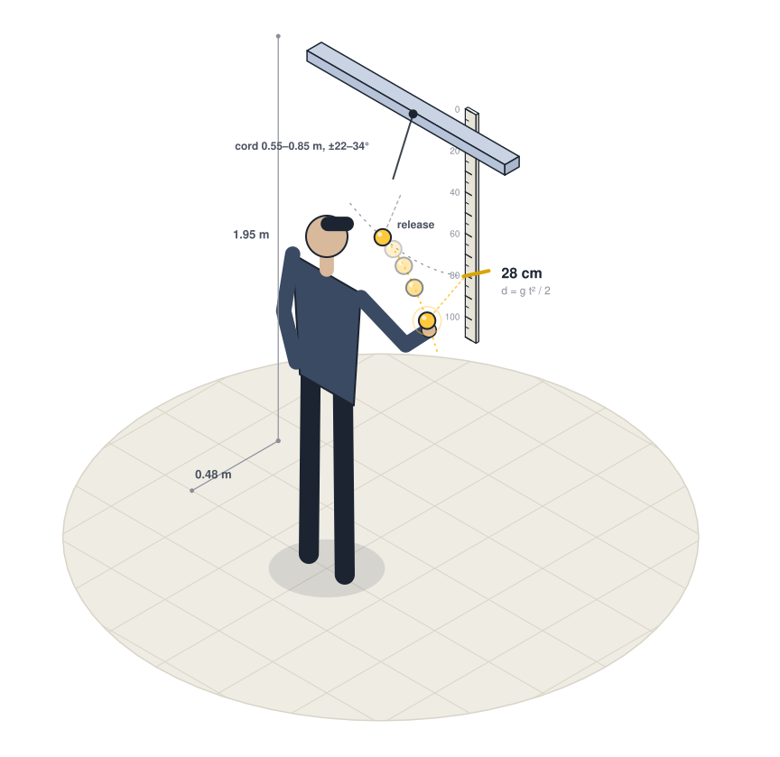
Catch the weight when the cord lets go.
Release snap on the cord. Contact pop on catch, with the bob frozen in the hand. Miss sink when it passes the floor.
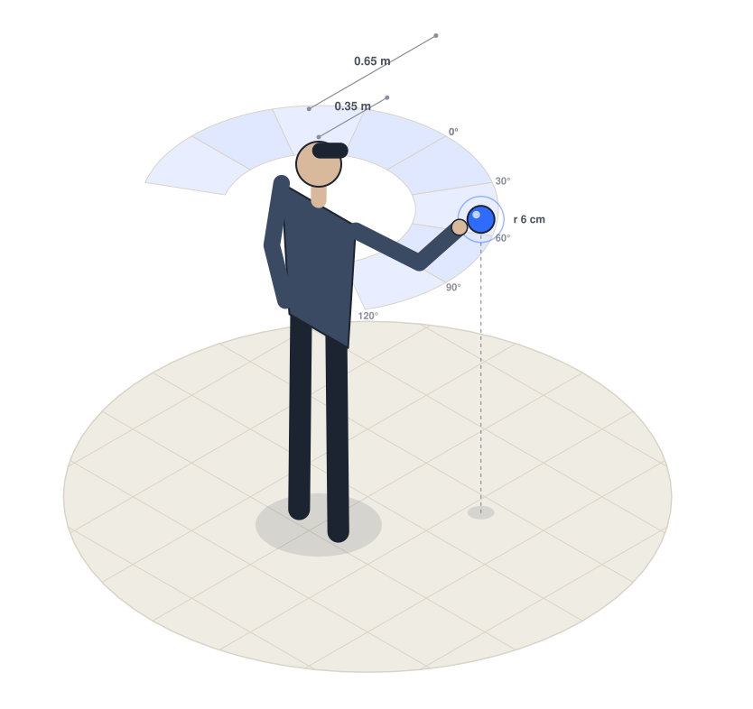
Touch each light as it appears.
Breathe while live. Proximity glow on approach. Contact pop with a tick pitched by speed. Miss sink on timeout.
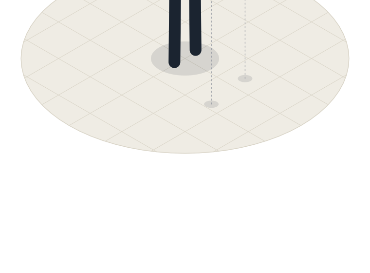
Touch blue. Leave orange.
Orange never glows on approach. A correct hold dissolves orange quietly. Touching it plays miss sink.
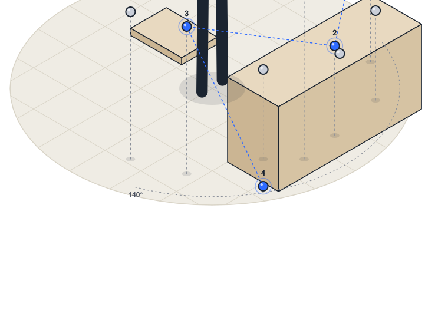
Watch the stars light, then touch them in order.
Nodes breathe while waiting. Each touch flashes white and pops. A wrong touch sinks the whole set.
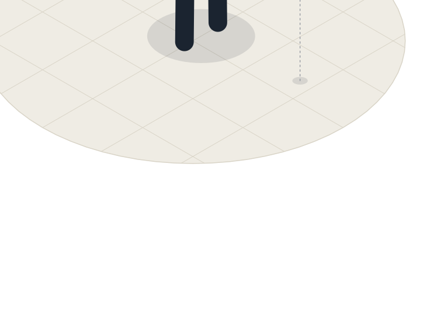
Keep your fingertip inside the moving light.
Proximity glow holds while the fingertip is inside. It dims the moment the finger leaves.
Scoring lives in one Swift package with no UI or ARKit dependency. The app, the CLI and the tests link the same code.
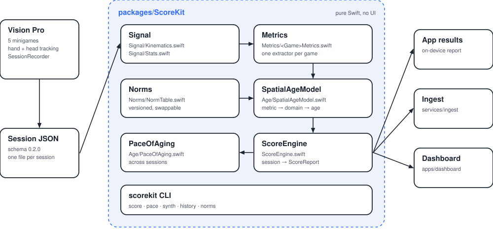
Trace resampled to 90 Hz, Gaussian smoothed (σ 2 samples). Onset fires when speed stays above 0.15 m/s for 50 ms, then walks back to where speed last fell under 5% of peak.
RT = onset − spawn_t, MT = contact_t − onsetLog dimensionless jerk on the velocity vector between onset and contact (Balasubramanian 2015). Closer to zero is smoother.
LDLJ = −ln( T³ / v_peak² · ∫ |d²v/dt²|² dt )Ex-Gaussian by method of moments on untrimmed RTs (0.10 to 1.50 s). Tau is the slow tail. Medians use 3-MAD trimming.
τ = s·(γ/2)^⅓, μ = mean − τSignal detection on Gate with the log-linear correction (Hautus 1995).
d' = Φ⁻¹((H+.5)/(G+1)) − Φ⁻¹((F+.5)/(N+1))Each norm is a curve m(a) = m₂₅ + β(a−25) + γ·max(0,a−50)². A value inverts to an age by bisection over 18 to 95. Its SD combines measurement and model error.
sd = √( (sem / |m'(a)|)² + τ² )Inverse-variance weights into 5 domains, then across domains. Correlated inputs inflate the variance by the design effect, ρ 0.5 within a domain and 0.3 between.
var = (1 + (k−1)ρ) / Σ wᵢEvidence combines with a prior centered on chronological age, SD 9 years. Thin evidence stays near the calendar. Reported with an 80% interval.
age = (e·w_e + c·w_p) / (w_e + w_p)Weighted least squares of Spatial Age on time, at least 3 sessions over 28 days, shrunk toward 1.0 with prior SD 0.5.
pace = (1·w₀ + b·w_b) / (w₀ + w_b)One JSON file per session: participant code, age, sex, handedness, device, then one block per game. Times in seconds from session start, positions in meters, y up. ? marks optional fields.
| index | trial number in block |
| kind | go or nogo |
| hand ? | left, right or null |
| spawn_t | target visible |
| move_t | device movement onset |
| contact_t | fingertip entered radius |
| position ? | target center |
| eccentricity_deg | head forward to target at spawn |
| outcome | trial result |
| tracking_gap_ms ? | longest hand gap |
| endpoint_error_m ? | fingertip to center at contact |
| trace ? | fingertip path {t, p} at 90 Hz |
| index | trial number in block |
| length_m | cord length |
| amplitude_deg | swing amplitude |
| release_t | cord releases |
| release_angle_deg | cord angle at release |
| release_position | bob at release |
| release_velocity | bob velocity at release |
| catch_t ? | grasp closes on bob |
| catch_position ? | bob at catch |
| hand ? | left, right or null |
| outcome | trial result |
| tracking_gap_ms | longest hand gap |
| aperture_release_m ? | thumb-index gap at release |
| aperture_catch_m ? | thumb-index gap at catch |
| trace ? | fingertip path {t, p} at 90 Hz |
| index | trial number in block |
| span | sequence length |
| sequence | node ids shown |
| response | node ids touched |
| correct | response equals sequence |
| start_t ? | trial start |
| end_t ? | trial end |
| tap_t ? | time of each touch |
| index | trial number in block |
| start_t | trial start |
| duration_s | trial length |
| path | Lissajous parameters |
| t | sample times |
| target | orb positions |
| finger | fingertip, null when untracked |
| hand ? | left, right or null |
| tracking_gap_ms | longest hand gap |
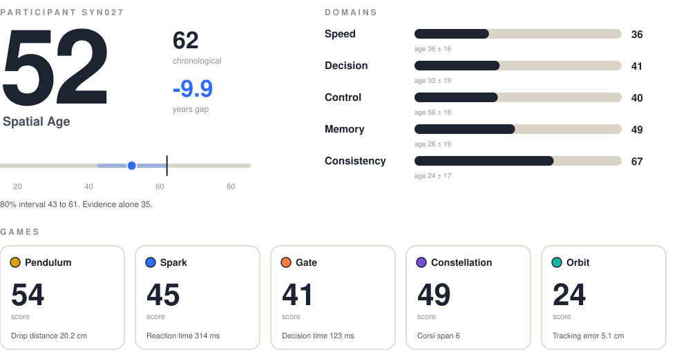
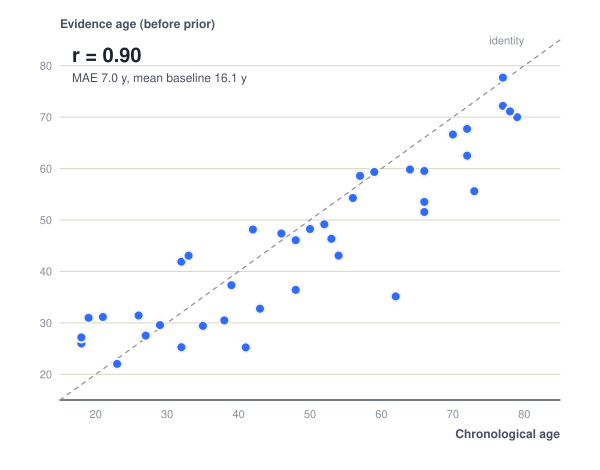
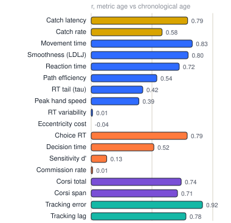
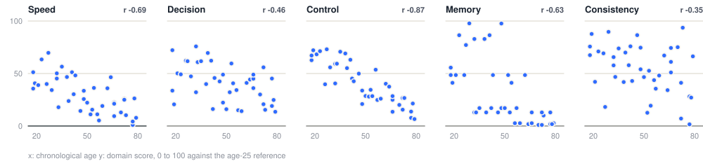
One synthetic participant, 52 at the start, whose latent age advances 0.8 years per calendar year. Session noise dwarfs 8 months of change, so the shrunk pace stays near 1.0. A pace claim needs a longer window or more sessions.
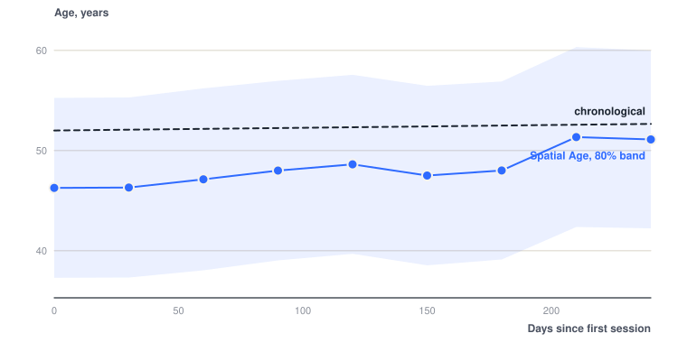
| Metric | Domain | Mean 25 | SD 25 | Per year | Model SD, y | Shape source |
|---|---|---|---|---|---|---|
| catch_latency | speed | 0.19 | 0.025 | +0.0009 | 14 | Ruler drop RT shape: Eckner et al. 2010; age slope after Der and Deary 2006 |
| catch_drop_cm | display | 17.7 | 4.5 | +0.17 | – | Display only. Derived from catch latency, d = g t^2 / 2 |
| catch_rate | control | 0.95 | 0.05 | -0.0015 | 26 | Prior, no published reference for this task |
| reach_rt | speed | 0.3 | 0.04 | +0.0015 | 13 | Simple RT age curve: Der and Deary 2006, Psychol Aging 21(1) |
| reach_mt | control | 0.38 | 0.06 | +0.0025 | 16 | Reach movement slowing: Ketcham and Stelmach 2001 |
| rt_tau | consistency | 0.04 | 0.015 | +0.0006 | 18 | Ex-Gaussian tau rises with age: West et al. 2002 |
| rt_cv | consistency | 0.14 | 0.035 | +0.0012 | 18 | Intra-individual variability: Hultsch et al. 2002 |
| ecc_slope | speed | 0.1 | 0.04 | +0.0015 | 22 | Useful field of view narrowing: Ball et al. 1988 |
| peak_speed | control | 1.9 | 0.3 | -0.007 | 20 | Peak reach velocity: Ketcham and Stelmach 2001 |
| path_efficiency | control | 0.95 | 0.02 | -0.0006 | 22 | Prior, straightness of reach |
| smoothness | control | -6 | 0.6 | -0.02 | 20 | LDLJ metric: Balasubramanian et al. 2015 |
| choice_rt | decision | 0.43 | 0.05 | +0.0025 | 13 | Choice RT age curve: Der and Deary 2006 |
| decision_time | decision | 0.13 | 0.04 | +0.001 | 18 | Choice minus simple RT, derived |
| commission_rate | decision | 0.06 | 0.04 | +0.0006 | 26 | Go/no-go errors: Bedard et al. 2002 |
| omission_rate | display | 0.02 | 0.03 | +0.0002 | – | Quality flag only |
| d_prime | decision | 3.2 | 0.6 | -0.012 | 22 | Signal detection on go/no-go |
| corsi_span | memory | 6.2 | 1 | -0.03 | 16 | Corsi span norms: Kessels et al. 2000, 2008 |
| corsi_total | memory | 52 | 16 | -0.45 | 17 | Corsi total score: Kessels et al. 2008 |
| corsi_tap_interval | display | 0.55 | 0.12 | +0.004 | – | Display only |
| pursuit_rms_cm | control | 4 | 1 | +0.045 | 16 | Prior values, needs calibration |
| pursuit_lag_ms | speed | 120 | 30 | +1.5 | 18 | Visuomotor delay, prior values |
| pursuit_on_target | display | 0.55 | 0.15 | -0.004 | – | Display only, redundant with tracking error |
| pursuit_gain | display | 1 | 0.08 | -0.0005 | – | Display only |